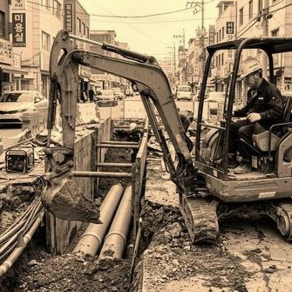
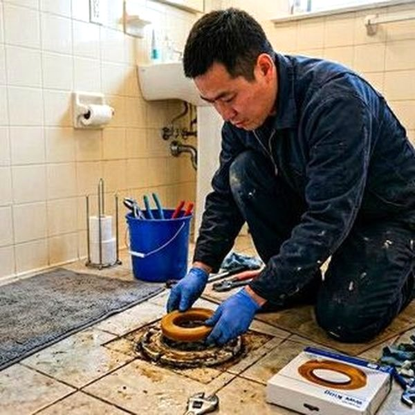
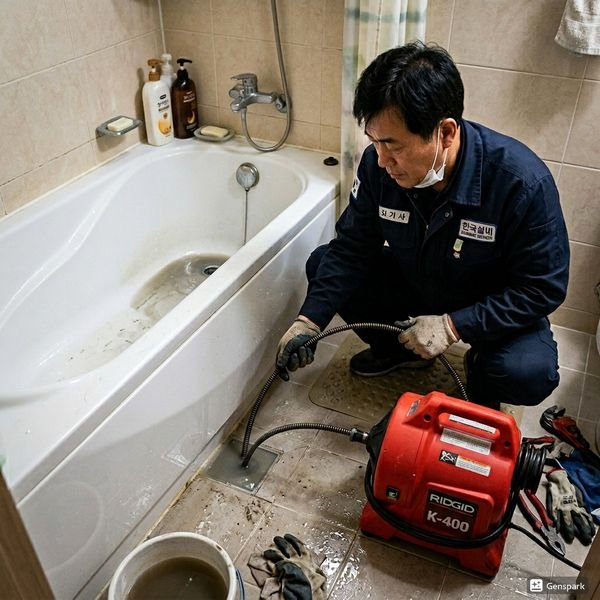

제우스시설관리 | 2025년 4월

밤에 화장실을 사용한 후 벽에서 '쿵쿵' 소리가 난다면, 이는 배관 소음입니다. 원인을 파악하고 적절한 대처를 하면 상당히 줄일 수 있습니다.
1. 워터 해머 현상
수도꼭지를 갑자기 잠그면, 배관 내 물의 흐름이 급격히 멈추면서 충격파가 발생합니다. 이것이 배관을 때려 '쿵' 소리가 납니다. 특히 단수 후 수도가 나올 때 심합니다.
2. 배관 진동
고정 클립이 빠졌거나 느슨하면, 물이 흐를 때 배관이 흔들려 소음을 발생시킵니다.
3. 유속 과다
급수 밸브가 완전히 열려 있어 물이 빠르게 흐르면, 배관에서 윙윙거리는 소음이 납니다.
4. 에어락(공기 차단)
배관 내에 공기가 갇혀 있으면 '칙칙' 또는 '윙' 소리가 납니다.
1. 급수 밸브 조절
싱크대, 화장실, 샤워기 근처의 급수 밸브를 3/4 정도만 열도록 설정합니다. 물의 유속이 느려지면서 소음과 수도 요금이 동시에 감소합니다.
2. 배관 클립 점검 및 강화
노출된 배관의 고정 클립을 확인하고, 느슨한 부분을 단단히 조여줍니다. 필요하면 클립을 추가로 설치하여 배관 진동을 줄입니다.
3. 워터 해머 댐퍼 설치
수도꼭지 근처에 에어 댐퍼(공기실)를 설치하면, 갑작스런 물 흐름 변화를 완화하여 워터 해머 현상을 크게 줄일 수 있습니다. 가격은 5~15만 원대입니다.
4. 배관 보온재 감싸기
배관을 스펀지나 폼 보온재로 감싸면, 소음을 흡수하면서 동시에 배관을 보호합니다.
5. 에어락 제거
모든 수전을 열어 배관 내 공기를 빼냅니다. 특히 급수를 다시 시작했을 때 필요합니다.
• 소음이 계속 커짐
• 벽에서 물 새는 소리 동반
• 특정 구간 배관이 뜨거워짐 (손으로 만질 수 없을 정도)
• 배관에서 냄새 발생
이런 경우 단순 소음이 아니라 배관 손상이나 누수 신호일 수 있습니다.
✓ 정기적인 배관 점검 (연 1회)
✓ 급수 밸브 적절한 개방도 유지
✓ 배관 고정 상태 확인
✓ 오래된 건물은 배관 교체 고려
배관 소음은 단순한 불편을 넘어 배관 손상의 신호일 수 있으므로, 심한 경우 전문가 점검을 권장합니다.

